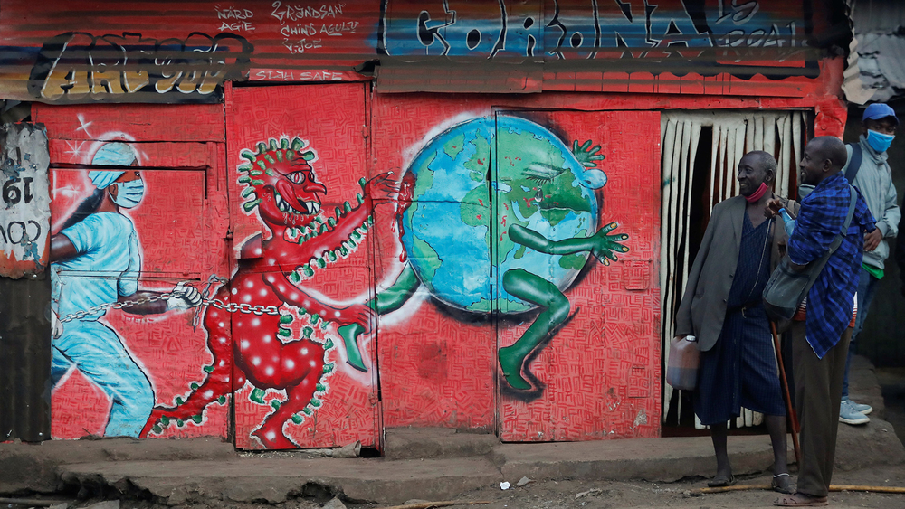

Are warnings of a COVID-19 famine in Africa overblown?
Alarm bells have been ringing for months that COVID-19 could push fragile African countries “closer to the abyss” of famine as jobs are lost, local markets close, and poverty deepens.
Aid agencies routinely list the coronavirus as a major factor in driving humanitarian needs, from the Sahel to Somalia, and don’t shy away from describing its impact as the “perfect storm”. A joint report in July by the World Food Programme (WFP) and the Food and Agriculture Organization (FAO) calculated that COVID-19 could create an additional 121 million hungry people globally by the end of the year – mostly in 15 already crisis-affected African countries
But as an increasing number of African countries ease their punishing lockdowns, ending restrictions on internal travel, relaxing curfews, and reopening schools, do these dire warnings still hold true? “Honestly, I’m not convinced [by the numbers],” said one senior Nairobi-based aid official, who asked not to be named so they could speak freely. “Some of the scenarios by us were done back in March/April and were [calculated] on a much longer lockdown period.
There have been alarming predictions of 6,000 to 12,000 daily deaths from hunger in the worst-affected countries by the end of the year. But projections in April that a famine of “biblical proportions” is on its way thanks to COVID-19 may be overblown, according to aid workers and anecdotal evidence gathered by TNH reporting.
The aid workers pointed to the deeper, existing problems of conflict and economic crisis, and emphasised the need not to lose focus on those core issues. “We’re trying to return to normal, but it will be a new normal,” said Jeremy Taylor, advocacy adviser for East Africa for the Norwegian Refugee Council. “Some of the development gains of recent years may have been lost, and we don’t know yet what the multilayered impacts of the pandemic will look like. “The new normal might be more difficult, more complicated than the past.”